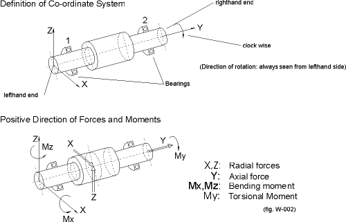

|
|
|


旋转方向
轴的轴线沿 y 轴正方向延伸（在图形化“轴编辑器”中从左到右）。在“轴编辑器”中，z 轴垂直向上，x 轴指向用户。轴绕 Y 轴正方向的右旋被定义为“顺时针”。
下图显示了这些坐标的方向以及力和力矩的正方向。请注意，如果轴水平放置，重力会沿负 z 方向作用（参见"空间中轴轴线位置"章）。

在大多数力元件中，扭矩的方向通过将其设置为“驱动”或“被驱动”来定义。如果输入“驱动”值，这意味着要么轴驱动（外部设备），要么力矩方向与旋转方向相反（即轴失去功率）。如果输入“被驱动”值，这意味着要么轴由外部驱动（例如由电机驱动），要么力矩方向与旋转方向相同（即轴获得功率）。
Direction of rotation
The shaft axis runs along the positive y-direction (left to right in the graphical Shaft Editor). In the Shaft Editor, the z-axis points vertically upwards and the x-axis points towards the user. A right-hand rotation of the shaft around the positive Y-axis direction is specified as "clockwise".
The next figure shows the direction of these coordinates and the positive direction of forces and moments. Note that weight has an effect in the negative z-direction if the shaft is positioned horizontally (see chapter Position of shaft axis in space).
In most force elements, the direction of the torque is defined by setting them as "driving" or "driven". If you enter a "driving" value, this means either that the shaft drives (an external application) or that the moment runs counter to the sense of rotation (i.e. the shaft loses power). If you enter a "driven" value, this means either that the shaft is driven from outside (e.g. by a motor) or that the moment runs in the same direction as the sense of rotation (i.e. the shaft is supplied with power).